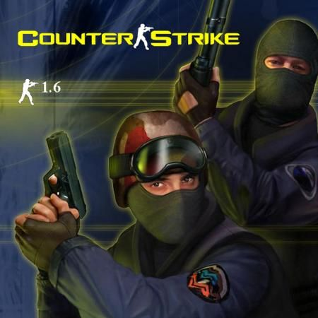

Введение
Counter-Strike — это культовая многопользовательская игра в жанре тактического шутера, которая появилась как модификация для Half-Life. С момента своего выхода в 1999 году она завоевала миллионы поклонников по всему миру.
Основные особенности
- Командная игра: террористы против спецназа.
- Реалистичная механика стрельбы и передвижения.
- Разнообразие карт и режимов игры.